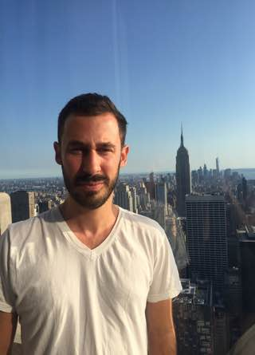

Hello there. My name is Casey Samulski and I’m a writer living in Harlem, New York.
Currently, I freelance for The Economist, Interior Design, and the National Science and Technology Medal Foundation. In 2016 I received my MFA in Fiction from Columbia University—while there I was also a De Alba and Teaching Fellow.
In my free time, I work on my own fiction and try to honor my father’s injunction that I do something every day for the advancement of human civilization. Most days I do alright.
You can reach me at: caseysamulski [at] gmail [dot] com or follow me on Twitter: @cssamulski